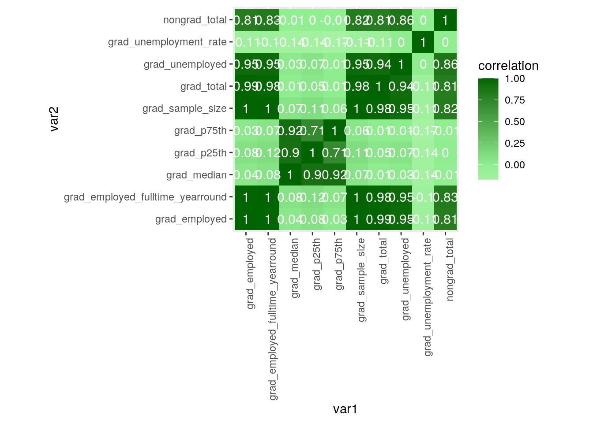
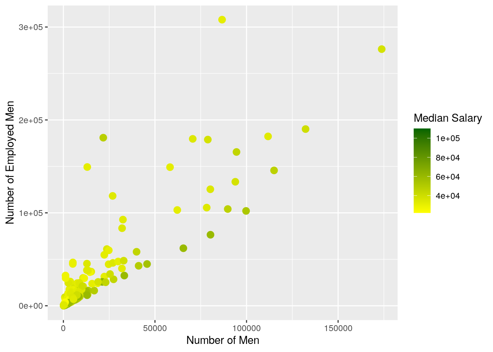
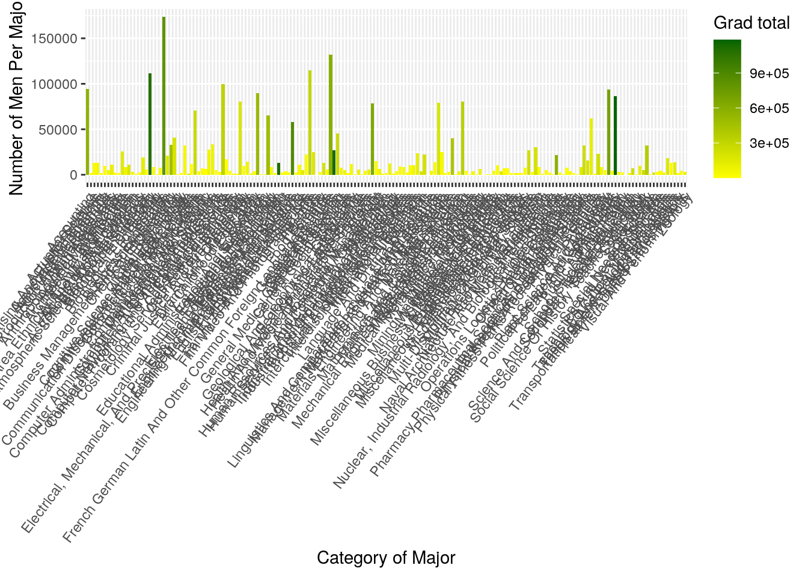
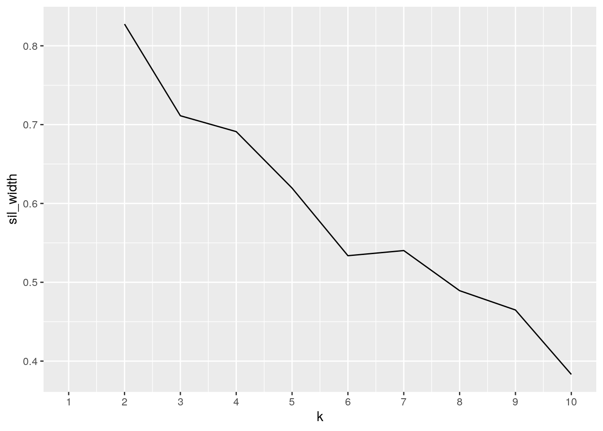
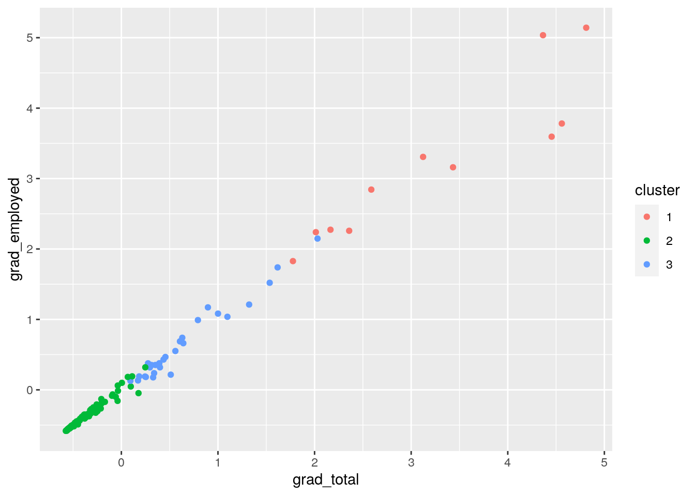
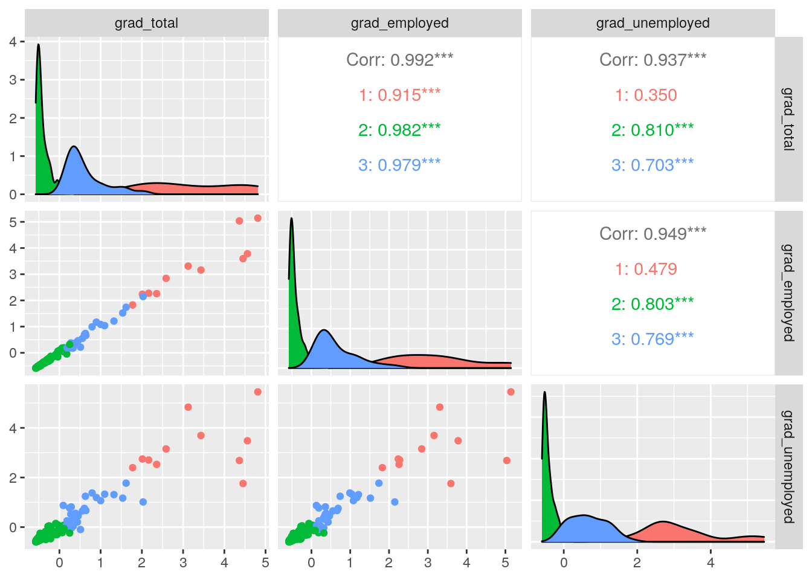

This is an R Markdown document. Markdown is a simple formatting syntax for authoring HTML, PDF, and MS Word documents. For more details on using R Markdown see http://rmarkdown.rstudio.com.
When you click the Knit button a document will be generated that includes both content as well as the output of any embedded R code chunks within the document. You can embed an R code chunk like this:
The two data sets I found on the R studio server are called “college_grad_students” and “college_recent_grads”. I found these two data sets to be interesting as I am also graduating this May but it was also intriguing to see the various statistics of each graduate! Both data sets illustrate similar data in the sense that they separate each graduate based on their major, their major category, how many students have graduated, if they are employed or not employed, and their median salaries. Based off of the data sets, both data sets illustrate graduates that have graduated from different years. In addition, in the “college_grad_students” data set, the data set contains nongraduates along with how many of those folks are employed, not employed and their median salary. With both data sets, I expect to see a difference in the number of students who have graduated based off of their major and major category along with having different salaries.
library(tidyverse)## ── Attaching packages ─────────────────────────────────────── tidyverse 1.3.0 ──## ✓ ggplot2 3.3.3 ✓ purrr 0.3.4
## ✓ tibble 3.0.4 ✓ dplyr 1.0.2
## ✓ tidyr 1.1.2 ✓ stringr 1.4.0
## ✓ readr 1.4.0 ✓ forcats 0.5.0## ── Conflicts ────────────────────────────────────────── tidyverse_conflicts() ──
## x dplyr::filter() masks stats::filter()
## x dplyr::lag() masks stats::lag()library(fivethirtyeight)## Some larger datasets need to be installed separately, like senators and
## house_district_forecast. To install these, we recommend you install the
## fivethirtyeightdata package by running:
## install.packages('fivethirtyeightdata', repos =
## 'https://fivethirtyeightdata.github.io/drat/', type = 'source')data("college_grad_students")
data("college_recent_grads")
currentgrad <- college_grad_students
recentgrad <- college_recent_gradscurrentgrad %>% pivot_wider(names_from = "major_category", values_from = "grad_total")## # A tibble: 173 x 36
## major_code major grad_sample_size grad_employed grad_employed_f…
## <int> <chr> <int> <int> <int>
## 1 5601 Cons… 200 7098 6511
## 2 6004 Comm… 882 40492 29553
## 3 6211 Hosp… 437 18368 14784
## 4 2201 Cosm… 72 3590 2701
## 5 2001 Comm… 171 7512 5622
## 6 3201 Cour… 22 1008 860
## 7 6206 Mark… 3738 151570 123045
## 8 1101 Agri… 386 13104 11207
## 9 2101 Comp… 98 4716 3981
## 10 1904 Adve… 688 28517 22523
## # … with 163 more rows, and 31 more variables: grad_unemployed <int>,
## # grad_unemployment_rate <dbl>, grad_p25th <dbl>, grad_median <dbl>,
## # grad_p75th <int>, nongrad_total <int>, nongrad_employed <int>,
## # nongrad_employed_fulltime_yearround <int>, nongrad_unemployed <int>,
## # nongrad_unemployment_rate <dbl>, nongrad_p25th <dbl>, nongrad_median <dbl>,
## # nongrad_p75th <dbl>, grad_share <dbl>, grad_premium <dbl>, `Industrial Arts
## # & Consumer Services` <int>, Arts <int>, Business <int>, `Computers &
## # Mathematics` <int>, `Law & Public Policy` <int>, `Agriculture & Natural
## # Resources` <int>, `Communications & Journalism` <int>, Engineering <int>,
## # `Social Science` <int>, Health <int>, Interdisciplinary <int>, `Physical
## # Sciences` <int>, `Humanities & Liberal Arts` <int>, `Psychology & Social
## # Work` <int>, `Biology & Life Science` <int>, Education <int>wider1 <- currentgrad %>% pivot_wider(names_from = "major_category", values_from = "grad_total")
wider1 %>% pivot_longer(c("Industrial Arts & Consumer Services", "Arts", "Business", "Computers & Mathematics", "Law & Public Policy", "Agriculture & Natural Resources", "Communications & Journalism", "Engineering", "Social Science", "Health", "Interdisciplinary", "Physical Sciences", "Humanities & Liberal Arts", "Psychology & Social Work", "Biology & Life Science", "Education"), names_to = "major_category", values_to = "grad_total")## # A tibble: 2,768 x 22
## major_code major grad_sample_size grad_employed grad_employed_f…
## <int> <chr> <int> <int> <int>
## 1 5601 Cons… 200 7098 6511
## 2 5601 Cons… 200 7098 6511
## 3 5601 Cons… 200 7098 6511
## 4 5601 Cons… 200 7098 6511
## 5 5601 Cons… 200 7098 6511
## 6 5601 Cons… 200 7098 6511
## 7 5601 Cons… 200 7098 6511
## 8 5601 Cons… 200 7098 6511
## 9 5601 Cons… 200 7098 6511
## 10 5601 Cons… 200 7098 6511
## # … with 2,758 more rows, and 17 more variables: grad_unemployed <int>,
## # grad_unemployment_rate <dbl>, grad_p25th <dbl>, grad_median <dbl>,
## # grad_p75th <int>, nongrad_total <int>, nongrad_employed <int>,
## # nongrad_employed_fulltime_yearround <int>, nongrad_unemployed <int>,
## # nongrad_unemployment_rate <dbl>, nongrad_p25th <dbl>, nongrad_median <dbl>,
## # nongrad_p75th <dbl>, grad_share <dbl>, grad_premium <dbl>,
## # major_category <chr>, grad_total <int>recentgrad %>% pivot_wider(names_from = "major_category", values_from = "total")## # A tibble: 173 x 35
## rank major_code major sample_size men women sharewomen employed
## <int> <int> <chr> <int> <int> <int> <dbl> <int>
## 1 1 2419 Petr… 36 2057 282 0.121 1976
## 2 2 2416 Mini… 7 679 77 0.102 640
## 3 3 2415 Meta… 3 725 131 0.153 648
## 4 4 2417 Nava… 16 1123 135 0.107 758
## 5 5 2405 Chem… 289 21239 11021 0.342 25694
## 6 6 2418 Nucl… 17 2200 373 0.145 1857
## 7 7 6202 Actu… 51 2110 1667 0.441 2912
## 8 8 5001 Astr… 10 832 960 0.536 1526
## 9 9 2414 Mech… 1029 80320 10907 0.120 76442
## 10 10 2408 Elec… 631 65511 16016 0.196 61928
## # … with 163 more rows, and 27 more variables: employed_fulltime <int>,
## # employed_parttime <int>, employed_fulltime_yearround <int>,
## # unemployed <int>, unemployment_rate <dbl>, p25th <dbl>, median <dbl>,
## # p75th <dbl>, college_jobs <int>, non_college_jobs <int>,
## # low_wage_jobs <int>, Engineering <int>, Business <int>, `Physical
## # Sciences` <int>, `Law & Public Policy` <int>, `Computers &
## # Mathematics` <int>, `Agriculture & Natural Resources` <int>, `Industrial
## # Arts & Consumer Services` <int>, Arts <int>, Health <int>, `Social
## # Science` <int>, `Biology & Life Science` <int>, Education <int>,
## # `Humanities & Liberal Arts` <int>, `Psychology & Social Work` <int>,
## # `Communications & Journalism` <int>, Interdisciplinary <int>wider2 <- recentgrad %>% pivot_wider(names_from = "major_category", values_from = "total")
wider2 %>% pivot_longer(c("Engineering", "Business", "Physical Sciences", "Law & Public Policy", "Computers & Mathematics", "Agriculture & Natural Resources", "Industrial Arts & Consumer Services", "Arts", "Health", "Social Science", "Biology & Life Science", "Psychology & Social Work", "Communications & Journalism", "Humanities & Liberal Arts", "Interdisciplinary"), names_to = "major_category", values_to = "total")## # A tibble: 2,595 x 22
## rank major_code major sample_size men women sharewomen employed
## <int> <int> <chr> <int> <int> <int> <dbl> <int>
## 1 1 2419 Petr… 36 2057 282 0.121 1976
## 2 1 2419 Petr… 36 2057 282 0.121 1976
## 3 1 2419 Petr… 36 2057 282 0.121 1976
## 4 1 2419 Petr… 36 2057 282 0.121 1976
## 5 1 2419 Petr… 36 2057 282 0.121 1976
## 6 1 2419 Petr… 36 2057 282 0.121 1976
## 7 1 2419 Petr… 36 2057 282 0.121 1976
## 8 1 2419 Petr… 36 2057 282 0.121 1976
## 9 1 2419 Petr… 36 2057 282 0.121 1976
## 10 1 2419 Petr… 36 2057 282 0.121 1976
## # … with 2,585 more rows, and 14 more variables: employed_fulltime <int>,
## # employed_parttime <int>, employed_fulltime_yearround <int>,
## # unemployed <int>, unemployment_rate <dbl>, p25th <dbl>, median <dbl>,
## # p75th <dbl>, college_jobs <int>, non_college_jobs <int>,
## # low_wage_jobs <int>, Education <int>, major_category <chr>, total <int>The function of pivot_wider and pivot_longer is to expand the data set by either adding rows or adding columns. Above, I used the function pivot_wider which will increase the number of columns within a data set but will decrease the number of rows but I also used pivot_longer. I renamed my data sets from “college_recent_grads” to “recentgrads” and “college_grad_students” to “currentgrad”. Because my data set was already tidy, I un-tidied it by using the pivot_wider function in which I called the data set “currentgrad” and called the pivot function using “%>%”. In the pivot_wider function, I used a categorical variable followed by a numerical variable. To tidy the data, I used the pivot_longer function by writing out all of the major categories and adding a numerical variable; the total number of graduates. I performed the same function for my “recentgrad” data set as well.
allgrads <- currentgrad %>% left_join(recentgrad)## Joining, by = c("major_code", "major", "major_category")To join both data sets, I performed a left_join join. The purpose of the join function is to merge together two datasets. Therefore, a left_join dataset would combine the “recentgrad” dataset into the “currentgrad” dataset because it is on the left. Both datasets were joined by “major_code”, “major” and “major_category” with 173 rows and 40 columns whereas before, “currentgrad” had 173 rows and 22 columns and “recentgrad” had 173 rows and 21 columns. Moreover, it is evident that 2 columns were dropped.
allgrads %>% filter(major_category == "Business")## # A tibble: 13 x 40
## major_code major major_category grad_total grad_sample_size grad_employed
## <int> <chr> <chr> <int> <int> <int>
## 1 6211 Hosp… Business 24417 437 18368
## 2 6206 Mark… Business 190996 3738 151570
## 3 6299 Misc… Business 22553 408 17691
## 4 6203 Busi… Business 813399 16129 622357
## 5 6212 Mana… Business 41970 963 36227
## 6 6204 Oper… Business 15056 335 12659
## 7 6200 Gene… Business 602964 10399 457191
## 8 6202 Actu… Business 2472 56 2020
## 9 6201 Acco… Business 569677 11774 451610
## 10 6207 Fina… Business 301650 6319 252242
## 11 6209 Huma… Business 72548 1316 55106
## 12 6210 Inte… Business 30985 604 24519
## 13 6205 Busi… Business 30210 642 22935
## # … with 34 more variables: grad_employed_fulltime_yearround <int>,
## # grad_unemployed <int>, grad_unemployment_rate <dbl>, grad_p25th <dbl>,
## # grad_median <dbl>, grad_p75th <int>, nongrad_total <int>,
## # nongrad_employed <int>, nongrad_employed_fulltime_yearround <int>,
## # nongrad_unemployed <int>, nongrad_unemployment_rate <dbl>,
## # nongrad_p25th <dbl>, nongrad_median <dbl>, nongrad_p75th <dbl>,
## # grad_share <dbl>, grad_premium <dbl>, rank <int>, total <int>,
## # sample_size <int>, men <int>, women <int>, sharewomen <dbl>,
## # employed <int>, employed_fulltime <int>, employed_parttime <int>,
## # employed_fulltime_yearround <int>, unemployed <int>,
## # unemployment_rate <dbl>, p25th <dbl>, median <dbl>, p75th <dbl>,
## # college_jobs <int>, non_college_jobs <int>, low_wage_jobs <int>allgradsbusiness <- allgrads %>% filter(major_category == "Business")
allgrads %>% arrange(median)## # A tibble: 173 x 40
## major_code major major_category grad_total grad_sample_size grad_employed
## <int> <chr> <chr> <int> <int> <int>
## 1 3501 Libr… Education 28963 314 15651
## 2 5203 Coun… Psychology & … 51812 724 38468
## 3 5201 Educ… Psychology & … 28941 396 18993
## 4 5202 Clin… Psychology & … 22716 355 16612
## 5 3609 Zool… Biology & Lif… 106415 1978 80607
## 6 3302 Comp… Humanities & … 21250 332 16723
## 7 6001 Dram… Arts 66560 1069 50690
## 8 2603 Othe… Humanities & … 46826 784 31558
## 9 2307 Earl… Education 82430 1396 63027
## 10 5502 Anth… Humanities & … 107888 1971 83632
## # … with 163 more rows, and 34 more variables:
## # grad_employed_fulltime_yearround <int>, grad_unemployed <int>,
## # grad_unemployment_rate <dbl>, grad_p25th <dbl>, grad_median <dbl>,
## # grad_p75th <int>, nongrad_total <int>, nongrad_employed <int>,
## # nongrad_employed_fulltime_yearround <int>, nongrad_unemployed <int>,
## # nongrad_unemployment_rate <dbl>, nongrad_p25th <dbl>, nongrad_median <dbl>,
## # nongrad_p75th <dbl>, grad_share <dbl>, grad_premium <dbl>, rank <int>,
## # total <int>, sample_size <int>, men <int>, women <int>, sharewomen <dbl>,
## # employed <int>, employed_fulltime <int>, employed_parttime <int>,
## # employed_fulltime_yearround <int>, unemployed <int>,
## # unemployment_rate <dbl>, p25th <dbl>, median <dbl>, p75th <dbl>,
## # college_jobs <int>, non_college_jobs <int>, low_wage_jobs <int>allgrads %>% select(major, major_category, grad_median)## # A tibble: 173 x 3
## major major_category grad_median
## <chr> <chr> <dbl>
## 1 Construction Services Industrial Arts & Consumer Se… 75000
## 2 Commercial Art And Graphic Design Arts 60000
## 3 Hospitality Management Business 65000
## 4 Cosmetology Services And Culinary… Industrial Arts & Consumer Se… 47000
## 5 Communication Technologies Computers & Mathematics 57000
## 6 Court Reporting Law & Public Policy 75000
## 7 Marketing And Marketing Research Business 80000
## 8 Agriculture Production And Manage… Agriculture & Natural Resourc… 67000
## 9 Computer Programming And Data Pro… Computers & Mathematics 85000
## 10 Advertising And Public Relations Communications & Journalism 60000
## # … with 163 more rowsallgrads %>% group_by(major, major_category, grad_median)## # A tibble: 173 x 40
## # Groups: major, major_category, grad_median [173]
## major_code major major_category grad_total grad_sample_size grad_employed
## <int> <chr> <chr> <int> <int> <int>
## 1 5601 Cons… Industrial Ar… 9173 200 7098
## 2 6004 Comm… Arts 53864 882 40492
## 3 6211 Hosp… Business 24417 437 18368
## 4 2201 Cosm… Industrial Ar… 5411 72 3590
## 5 2001 Comm… Computers & M… 9109 171 7512
## 6 3201 Cour… Law & Public … 1542 22 1008
## 7 6206 Mark… Business 190996 3738 151570
## 8 1101 Agri… Agriculture &… 17488 386 13104
## 9 2101 Comp… Computers & M… 5611 98 4716
## 10 1904 Adve… Communication… 33928 688 28517
## # … with 163 more rows, and 34 more variables:
## # grad_employed_fulltime_yearround <int>, grad_unemployed <int>,
## # grad_unemployment_rate <dbl>, grad_p25th <dbl>, grad_median <dbl>,
## # grad_p75th <int>, nongrad_total <int>, nongrad_employed <int>,
## # nongrad_employed_fulltime_yearround <int>, nongrad_unemployed <int>,
## # nongrad_unemployment_rate <dbl>, nongrad_p25th <dbl>, nongrad_median <dbl>,
## # nongrad_p75th <dbl>, grad_share <dbl>, grad_premium <dbl>, rank <int>,
## # total <int>, sample_size <int>, men <int>, women <int>, sharewomen <dbl>,
## # employed <int>, employed_fulltime <int>, employed_parttime <int>,
## # employed_fulltime_yearround <int>, unemployed <int>,
## # unemployment_rate <dbl>, p25th <dbl>, median <dbl>, p75th <dbl>,
## # college_jobs <int>, non_college_jobs <int>, low_wage_jobs <int>zscore <- function(x) (x-mean(x,na.rm=T)) / sd(x,na.rm=T)
allgrads %>% mutate_at(c("grad_total","grad_employed"), list(z=zscore))## # A tibble: 173 x 42
## major_code major major_category grad_total grad_sample_size grad_employed
## <int> <chr> <chr> <int> <int> <int>
## 1 5601 Cons… Industrial Ar… 9173 200 7098
## 2 6004 Comm… Arts 53864 882 40492
## 3 6211 Hosp… Business 24417 437 18368
## 4 2201 Cosm… Industrial Ar… 5411 72 3590
## 5 2001 Comm… Computers & M… 9109 171 7512
## 6 3201 Cour… Law & Public … 1542 22 1008
## 7 6206 Mark… Business 190996 3738 151570
## 8 1101 Agri… Agriculture &… 17488 386 13104
## 9 2101 Comp… Computers & M… 5611 98 4716
## 10 1904 Adve… Communication… 33928 688 28517
## # … with 163 more rows, and 36 more variables:
## # grad_employed_fulltime_yearround <int>, grad_unemployed <int>,
## # grad_unemployment_rate <dbl>, grad_p25th <dbl>, grad_median <dbl>,
## # grad_p75th <int>, nongrad_total <int>, nongrad_employed <int>,
## # nongrad_employed_fulltime_yearround <int>, nongrad_unemployed <int>,
## # nongrad_unemployment_rate <dbl>, nongrad_p25th <dbl>, nongrad_median <dbl>,
## # nongrad_p75th <dbl>, grad_share <dbl>, grad_premium <dbl>, rank <int>,
## # total <int>, sample_size <int>, men <int>, women <int>, sharewomen <dbl>,
## # employed <int>, employed_fulltime <int>, employed_parttime <int>,
## # employed_fulltime_yearround <int>, unemployed <int>,
## # unemployment_rate <dbl>, p25th <dbl>, median <dbl>, p75th <dbl>,
## # college_jobs <int>, non_college_jobs <int>, low_wage_jobs <int>,
## # grad_total_z <dbl>, grad_employed_z <dbl>allgrads %>% summarize_all(n_distinct)## # A tibble: 1 x 40
## major_code major major_category grad_total grad_sample_size grad_employed
## <int> <int> <int> <int> <int> <int>
## 1 173 173 16 173 167 173
## # … with 34 more variables: grad_employed_fulltime_yearround <int>,
## # grad_unemployed <int>, grad_unemployment_rate <int>, grad_p25th <int>,
## # grad_median <int>, grad_p75th <int>, nongrad_total <int>,
## # nongrad_employed <int>, nongrad_employed_fulltime_yearround <int>,
## # nongrad_unemployed <int>, nongrad_unemployment_rate <int>,
## # nongrad_p25th <int>, nongrad_median <int>, nongrad_p75th <int>,
## # grad_share <int>, grad_premium <int>, rank <int>, total <int>,
## # sample_size <int>, men <int>, women <int>, sharewomen <int>,
## # employed <int>, employed_fulltime <int>, employed_parttime <int>,
## # employed_fulltime_yearround <int>, unemployed <int>,
## # unemployment_rate <int>, p25th <int>, median <int>, p75th <int>,
## # college_jobs <int>, non_college_jobs <int>, low_wage_jobs <int>Using the “dplyr” functions, I was able to summarize the same categorical and numerical variable in different ways by filtering, arranging, selecting, grouping, mutating and summarizing.
median(allgrads$grad_median)## [1] 75000mean(allgrads[allgrads$grad_median>75000,]$grad_p75th)## [1] 61314.81sd(allgrads[allgrads$grad_median<75000,]$grad_p75th)## [1] 4398.829median(allgrads$grad_total)## [1] 37872min(allgrads[allgrads$grad_total>37872,]$grad_employed)## [1] 28930max(allgrads[allgrads$grad_total>37872,]$grad_employed)## [1] 915341After joining both datasets together, I performed a set of summary statistics that I found very interesting. First, I found the median salary of employed graduated which was 75,000 dollars. I then performed a mean function by looking at the salary of graduate students who were in the 75th percentile and were making more than the median salary in which their mean salary was 61,314.81 dollars. Next, I used the standard deviation function to find out how many employed graduates in the 75th percentile make less than the median amount which was 4,398.83 dollars. After, I found the median number of total graduates which is 37872 students. Following that, I found the minimum number of employed graduates that is greater than the median number of total graduates which is 28930 while the highest number of employed graduates is 915,341 graduates.
correlationmatrix <- allgrads %>% select_if(is.numeric) %>% cor(use = "pair")tenvariables <- allgrads %>% select(grad_total, grad_sample_size, grad_employed, grad_employed_fulltime_yearround, grad_unemployed, grad_unemployment_rate, grad_p25th, grad_median, grad_p75th, nongrad_total)
tenvariables %>% select_if(is.numeric) %>% cor(use = "pair")## grad_total grad_sample_size grad_employed
## grad_total 1.00000000 0.98213651 0.99230587
## grad_sample_size 0.98213651 1.00000000 0.99556695
## grad_employed 0.99230587 0.99556695 1.00000000
## grad_employed_fulltime_yearround 0.98008912 0.99714193 0.99533033
## grad_unemployed 0.93666605 0.94857642 0.94862128
## grad_unemployment_rate -0.11195031 -0.10810820 -0.10951435
## grad_p25th 0.04983728 0.11267846 0.08364325
## grad_median 0.00831711 0.06796325 0.03844818
## grad_p75th 0.01042888 0.05782339 0.03211233
## nongrad_total 0.80797856 0.81563532 0.81385899
## grad_employed_fulltime_yearround
## grad_total 0.98008912
## grad_sample_size 0.99714193
## grad_employed 0.99533033
## grad_employed_fulltime_yearround 1.00000000
## grad_unemployed 0.95496465
## grad_unemployment_rate -0.10334876
## grad_p25th 0.11898954
## grad_median 0.07703838
## grad_p75th 0.06518412
## nongrad_total 0.82931956
## grad_unemployed grad_unemployment_rate
## grad_total 0.936666051 -0.111950306
## grad_sample_size 0.948576421 -0.108108200
## grad_employed 0.948621282 -0.109514350
## grad_employed_fulltime_yearround 0.954964650 -0.103348756
## grad_unemployed 1.000000000 0.004597490
## grad_unemployment_rate 0.004597490 1.000000000
## grad_p25th 0.066528792 -0.135010458
## grad_median 0.025487520 -0.138856033
## grad_p75th 0.009289077 -0.174589025
## nongrad_total 0.863304266 -0.004279739
## grad_p25th grad_median grad_p75th
## grad_total 0.049837282 0.008317110 0.010428877
## grad_sample_size 0.112678465 0.067963251 0.057823386
## grad_employed 0.083643252 0.038448182 0.032112326
## grad_employed_fulltime_yearround 0.118989540 0.077038384 0.065184116
## grad_unemployed 0.066528792 0.025487520 0.009289077
## grad_unemployment_rate -0.135010458 -0.138856033 -0.174589025
## grad_p25th 1.000000000 0.900445209 0.711320918
## grad_median 0.900445209 1.000000000 0.915248454
## grad_p75th 0.711320918 0.915248454 1.000000000
## nongrad_total -0.002953517 -0.009721626 -0.010183320
## nongrad_total
## grad_total 0.807978563
## grad_sample_size 0.815635323
## grad_employed 0.813858994
## grad_employed_fulltime_yearround 0.829319558
## grad_unemployed 0.863304266
## grad_unemployment_rate -0.004279739
## grad_p25th -0.002953517
## grad_median -0.009721626
## grad_p75th -0.010183320
## nongrad_total 1.000000000cormat <- tenvariables %>% select_if(is.numeric) %>% cor(use = "pair")
tidycor <- cormat %>% as.data.frame %>% rownames_to_column("var1") %>%
pivot_longer(-1, names_to = "var2", values_to = "correlation")
tidycor %>% ggplot(aes(var1, var2, fill = correlation)) + geom_tile() +
scale_fill_gradient2(low = "white", mid = "lightgreen", high = "darkgreen") +
geom_text(aes(label = round(correlation, 2)), color = "white", size = 4) +
theme(axis.text.x = element_text(angle = 90, hjust = 1)) + coord_fixed()
The first plot I made was a correlation heatmap using numeric variables. My dataset contained a lot of variables and thus, I selected 10 variables. To see the correlation, I used the correlations function which outputted the correlation values for all 10 variables. To create the actual heatmap, I first used pivot_long to organize the variables and then used ggplot with geom_tile to create a checkered map. In the heatmap, it illustrated how much correlation there was between all of the various variables within the shared data set with 1 being the highest and 0 meaning there was no correlation at all.
ggplot(data = allgrads, aes(x = men, y = employed)) +
geom_point(size = 3, aes(color = median)) + xlab("Number of Men") +
ylab("Number of Employed Men") + labs(color = "Median Salary") +
scale_color_gradient(low = "yellow", high = "darkgreen")## Warning: Removed 1 rows containing missing values (geom_point).
The next plot I created was a scatterplot using ggplot. The three numeric variables I used were the number of men, the number of employed men and their median salary. From this plot, we can see there is a positive correlation as the higher the number of graduate men and the higher the number of men who graduated and employed, the higher their median salary.
ggplot(allgrads, aes(x = major)) + geom_bar(aes(y = men, fill = grad_total), stat = "summary", fun = mean) + theme(axis.text.x = element_text(angle = 53, hjust = 1)) +
xlab("Category of Major") +
ylab("Number of Men Per Major") +
labs(fill = "Grad total") +
scale_fill_gradient2(low = "white", mid = "yellow", high = "darkgreen")## Warning: Removed 1 rows containing non-finite values (stat_summary). The final plot I made was a barplot. The three variables I used to create this barplot was the category of major, the number of men per major category and how many total graduates there are. Thus, with each category of major, we are able to see how many men are in that category of major and how many of those men graduated from each of those majors which I found interesting to see more people graduate from certain majors than from others and how many men chose certain majors over others.
library(cluster)
select(allgrads, grad_total, grad_employed, grad_unemployed) ## # A tibble: 173 x 3
## grad_total grad_employed grad_unemployed
## <int> <int> <int>
## 1 9173 7098 681
## 2 53864 40492 2482
## 3 24417 18368 1465
## 4 5411 3590 316
## 5 9109 7512 466
## 6 1542 1008 0
## 7 190996 151570 8324
## 8 17488 13104 473
## 9 5611 4716 119
## 10 33928 28517 899
## # … with 163 more rowsclust_data <- select(allgrads, grad_total, grad_employed, grad_unemployed) %>%
scale()
sil_width <- vector()
for (i in 2:10) {
kms <- kmeans(clust_data, centers = i)
sil <- silhouette(kms$cluster, dist(clust_data))
sil_width[i] <- mean(sil[, 3]) }
ggplot() + geom_line(aes(x = 1:10, y = sil_width)) + scale_x_continuous(name = "k",
breaks = 1:10)## Warning: Removed 1 row(s) containing missing values (geom_path).
kmeans1 <- clust_data %>% kmeans(3)
kmeans1## K-means clustering with 3 clusters of sizes 11, 133, 29
##
## Cluster means:
## grad_total grad_employed grad_unemployed
## 1 3.2406208 3.2240140 3.2207483
## 2 -0.4038637 -0.4045921 -0.4113010
## 3 0.6230013 0.6326412 0.6646483
##
## Clustering vector:
## [1] 2 2 2 2 2 2 3 2 2 2 2 2 2 2 2 2 2 2 2 2 3 1 2 2 2 2 1 2 2 3 2 2 2 2 2 1 3
## [38] 3 2 2 2 2 2 2 3 2 2 2 2 2 2 3 2 2 2 2 2 2 2 2 3 2 2 2 2 2 2 2 3 2 2 3 3 3
## [75] 2 2 2 3 2 2 2 2 3 2 2 2 2 2 2 2 2 2 2 2 2 1 3 2 3 3 2 2 2 2 1 2 2 1 3 3 2
## [112] 2 2 3 1 2 2 2 2 1 2 2 2 3 2 1 2 2 2 3 2 3 1 2 2 2 2 2 3 2 2 2 2 3 2 2 2 2
## [149] 2 3 3 2 1 2 3 2 2 2 2 2 2 3 2 2 2 2 2 2 2 2 2 2 2
##
## Within cluster sum of squares by cluster:
## [1] 37.29154 11.74030 21.37050
## (between_SS / total_SS = 86.4 %)
##
## Available components:
##
## [1] "cluster" "centers" "totss" "withinss" "tot.withinss"
## [6] "betweenss" "size" "iter" "ifault"kmeansclust <- clust_data %>% as.data.frame %>% mutate(cluster = as.factor(kmeans1$cluster))
kmeansclust## grad_total grad_employed grad_unemployed cluster
## 1 -0.539733066 -0.54430837 -0.47808616 2
## 2 -0.336176870 -0.33523504 -0.17334180 2
## 3 -0.470300503 -0.47374910 -0.34542676 2
## 4 -0.556868024 -0.56627128 -0.53984723 2
## 5 -0.540024570 -0.54171640 -0.51446597 2
## 6 -0.574490340 -0.58243668 -0.59331709 2
## 7 0.288424692 0.36020270 0.81517378 3
## 8 -0.501860345 -0.50670598 -0.51328151 2
## 9 -0.555957075 -0.55922161 -0.57318129 2
## 10 -0.426980305 -0.41020818 -0.44119872 2
## 11 -0.469808591 -0.46942288 -0.24897796 2
## 12 -0.566997782 -0.57632613 -0.53933961 2
## 13 -0.553889220 -0.56093707 -0.54086248 2
## 14 -0.386046794 -0.36374049 -0.26217622 2
## 15 -0.456668146 -0.46331234 -0.42749284 2
## 16 -0.530660010 -0.53216867 -0.45744273 2
## 17 -0.478790552 -0.47798766 -0.44695181 2
## 18 -0.514030629 -0.51090698 -0.52444927 2
## 19 -0.490942617 -0.49638817 -0.49128442 2
## 20 -0.573620384 -0.58186069 -0.58587192 2
## 21 0.275817152 0.37633053 0.52193559 3
## 22 3.123312869 3.30770847 4.83641184 1
## 23 -0.497255496 -0.49743999 -0.47622487 2
## 24 -0.390351030 -0.36193738 -0.34644201 2
## 25 -0.534645414 -0.53519264 -0.50160613 2
## 26 -0.512937490 -0.50949204 -0.54323140 2
## 27 2.164834691 2.27363629 2.70523181 1
## 28 -0.367308565 -0.35309712 -0.42630838 2
## 29 -0.255726374 -0.20772748 -0.16369692 2
## 30 0.630431532 0.73951985 1.24276345 3
## 31 -0.570254426 -0.57610074 -0.56590533 2
## 32 -0.453274859 -0.44787319 -0.37402298 2
## 33 -0.035158197 -0.01414338 0.08791600 2
## 34 -0.496549510 -0.49797215 -0.52952552 2
## 35 -0.528113907 -0.52945148 -0.51717330 2
## 36 2.013220828 2.23869474 2.74499579 1
## 37 0.245236581 0.18913245 0.77253326 3
## 38 2.030483319 2.14794437 1.01382446 3
## 39 -0.464005843 -0.44848675 -0.39382037 2
## 40 -0.552062766 -0.55833884 -0.54187773 2
## 41 -0.515902630 -0.50918526 -0.54915370 2
## 42 -0.563704700 -0.56915751 -0.58857926 2
## 43 -0.379711141 -0.40762247 -0.44542893 2
## 44 -0.468952298 -0.48337196 -0.47064099 2
## 45 0.393065449 0.37794582 0.55526965 3
## 46 -0.448232754 -0.44138700 -0.33882763 2
## 47 -0.498052577 -0.49583096 -0.49297650 2
## 48 -0.447800053 -0.44228229 -0.47300991 2
## 49 -0.449959004 -0.45333887 -0.39923504 2
## 50 0.097526137 0.04730643 0.06981070 2
## 51 -0.037271600 0.06106142 -0.13713120 2
## 52 0.792425663 0.99049050 1.37542285 3
## 53 -0.547448808 -0.55343663 -0.57436575 2
## 54 -0.440394035 -0.44611390 -0.46894891 2
## 55 -0.251075977 -0.24373963 0.05187461 2
## 56 -0.440384925 -0.43523888 -0.35236430 2
## 57 -0.484725387 -0.48404812 -0.47893220 2
## 58 -0.278349802 -0.27138735 0.02920068 2
## 59 -0.443914854 -0.44515600 -0.38366786 2
## 60 -0.489612631 -0.50872822 -0.36725465 2
## 61 0.896055266 1.17108969 1.19301618 3
## 62 -0.374491401 -0.36784758 -0.26623722 2
## 63 -0.514103505 -0.52243312 -0.55676807 2
## 64 -0.382872135 -0.35041123 -0.35777897 2
## 65 -0.343997370 -0.34498311 -0.38163736 2
## 66 -0.462944587 -0.46909106 -0.47740933 2
## 67 -0.483427284 -0.47734906 -0.47876299 2
## 68 -0.443810095 -0.44628295 -0.34898014 2
## 69 0.093750252 0.12834003 0.87287385 3
## 70 -0.566323679 -0.57444789 -0.58756401 2
## 71 -0.430583110 -0.43336690 -0.42326263 2
## 72 0.641312823 0.66197978 0.66897771 3
## 73 0.436321880 0.42984790 0.20280852 3
## 74 0.312783478 0.35224521 0.30805615 3
## 75 -0.207559925 -0.13078844 -0.32393729 2
## 76 -0.553807234 -0.56063029 -0.54746161 2
## 77 -0.206065968 -0.19414779 -0.29551028 2
## 78 1.097866994 1.03744654 1.32770608 3
## 79 -0.247423070 -0.30235329 -0.11259598 2
## 80 -0.322772249 -0.28976281 -0.49246888 2
## 81 0.066558412 0.18307825 -0.22359670 2
## 82 -0.558594273 -0.57148027 -0.54915370 2
## 83 1.000541161 1.08240538 1.06661749 3
## 84 -0.456362978 -0.46813942 -0.38772886 2
## 85 -0.515374279 -0.52077401 -0.53070998 2
## 86 -0.186202716 -0.17282975 -0.14169982 2
## 87 -0.563568057 -0.57201244 -0.57994963 2
## 88 -0.549598648 -0.55872075 -0.54052407 2
## 89 -0.532317938 -0.54655600 -0.55575282 2
## 90 -0.559605427 -0.56445565 -0.51801935 2
## 91 -0.323414469 -0.33555434 -0.20532219 2
## 92 -0.346643678 -0.34341791 -0.40718783 2
## 93 -0.288716406 -0.24844150 -0.38586757 2
## 94 -0.433261301 -0.42500873 -0.29111086 2
## 95 -0.395953369 -0.39208941 -0.46251899 2
## 96 1.776087037 1.82793582 2.39625724 1
## 97 0.339023376 0.23670831 0.04662915 3
## 98 -0.419624389 -0.41274381 -0.44542893 2
## 99 1.617367769 1.73853778 1.77120134 3
## 100 0.172114673 0.13291042 0.07099516 3
## 101 -0.548195786 -0.55430688 -0.57216604 2
## 102 0.177425508 -0.04677469 -0.06775575 2
## 103 -0.483518379 -0.48350343 -0.47571724 2
## 104 -0.387203700 -0.38849571 -0.25490026 2
## 105 4.454246371 3.59462866 1.75681863 1
## 106 -0.519031741 -0.52898192 -0.51666568 2
## 107 -0.565731562 -0.58093409 -0.58113409 2
## 108 4.559552121 3.78160135 3.48172924 1
## 109 0.352268580 0.35283999 0.50772208 3
## 110 0.253093519 0.18223931 0.01583321 3
## 111 -0.317520626 -0.33658111 -0.22833453 2
## 112 -0.503850770 -0.50709415 -0.47402516 2
## 113 -0.090111219 -0.06514390 0.14680053 2
## 114 0.606473563 0.68835029 0.75408954 3
## 115 3.433190524 3.16026025 3.69273214 1
## 116 -0.253212154 -0.29532867 -0.44170635 2
## 117 -0.170529832 -0.17085133 -0.27503606 2
## 118 0.111891809 0.19189973 -0.05624957 2
## 119 -0.368233179 -0.39116908 -0.35033380 2
## 120 4.812026300 5.14202427 5.45046919 1
## 121 -0.197052123 -0.17629824 -0.07029387 2
## 122 -0.545171434 -0.55561539 -0.55812174 2
## 123 -0.528045586 -0.53454778 -0.55321470 2
## 124 0.184303176 0.19099817 0.25221737 3
## 125 -0.315010960 -0.32183692 -0.38603678 2
## 126 2.358183699 2.25864793 2.52773218 1
## 127 -0.517396587 -0.52040462 -0.50008325 2
## 128 -0.503741456 -0.50038883 -0.52292639 2
## 129 -0.481432305 -0.48244536 -0.46624157 2
## 130 0.399469423 0.31933842 0.39147590 3
## 131 -0.039166374 -0.15677078 -0.21039844 2
## 132 1.322625538 1.21102736 1.30943157 3
## 133 2.587337574 2.84341967 3.15194204 1
## 134 -0.265619284 -0.24632534 -0.15439046 2
## 135 -0.528123016 -0.52997739 -0.51717330 2
## 136 -0.455146860 -0.44795458 -0.49229967 2
## 137 -0.435274499 -0.43440620 -0.46184215 2
## 138 -0.519314136 -0.53052834 -0.55642966 2
## 139 0.511297570 0.21557183 -0.09770564 3
## 140 -0.540493709 -0.54214840 -0.57064316 2
## 141 -0.495533802 -0.51225931 -0.53798594 2
## 142 -0.484146934 -0.48968911 -0.51345072 2
## 143 -0.554267264 -0.55724320 -0.55287628 2
## 144 0.328984713 0.17669849 0.07014912 3
## 145 -0.533597822 -0.53511125 -0.57639625 2
## 146 -0.511899008 -0.50813970 -0.52309560 2
## 147 -0.213371782 -0.26475089 -0.46674920 2
## 148 -0.265865241 -0.32552453 -0.43189226 2
## 149 -0.199753088 -0.17403182 -0.22088936 2
## 150 0.559085976 0.55142648 0.65357974 3
## 151 0.295252257 0.31818017 -0.03002227 3
## 152 -0.490601011 -0.50691258 -0.51734251 2
## 153 4.364836688 5.03559684 2.68391155 1
## 154 -0.552677657 -0.55443836 -0.57436575 2
## 155 1.535459755 1.52012959 1.16831175 3
## 156 -0.311130316 -0.27288994 -0.41091042 2
## 157 -0.480603341 -0.46682465 -0.53138681 2
## 158 -0.449594624 -0.49075971 -0.51158943 2
## 159 -0.409016383 -0.38383767 -0.43256910 2
## 160 -0.541190585 -0.54134701 -0.56150591 2
## 161 -0.096820362 -0.08408283 -0.30177099 2
## 162 0.455702329 0.46671778 0.45391381 3
## 163 -0.515793316 -0.51016820 -0.55524520 2
## 164 -0.449694828 -0.46983609 -0.50888209 2
## 165 0.005556686 0.09959041 -0.13171653 2
## 166 -0.526373993 -0.52332216 -0.55829095 2
## 167 -0.516909229 -0.51197132 -0.54712319 2
## 168 0.247942101 0.31970781 -0.23747179 2
## 169 -0.345523210 -0.34790691 -0.35304114 2
## 170 -0.478048128 -0.48474307 -0.46099611 2
## 171 -0.057849947 -0.09957833 -0.30024811 2
## 172 -0.491143026 -0.51791908 -0.48959233 2
## 173 -0.334833219 -0.37499115 -0.49483779 2kmeansclust %>% ggplot(aes(grad_total, grad_employed, grad_unemployed, color = cluster)) +
geom_point()
library(GGally)## Registered S3 method overwritten by 'GGally':
## method from
## +.gg ggplot2ggpairs(kmeansclust, columns = 1:3, aes(color = cluster))
Lastly, I used a ggplot to illustrate a cluster of three variables. The three variables I used in my cluster were the total number of graduates, the number of employed graduates and the number of unemployed graduates. The purpose of clustering is to cluster data based off of how similar they are by showing it visually and showing the correlation. From the graph, we are able to see that there is a high correlation between those who have graduated followed by those who graduated and are employed which is followed by the least correlated, those who graduates and are unemployed. All scatter plots show a similar trend such that there is a positive correlation and all graphs indicate that the red has the highest correlation with blue and green having similar correlations.